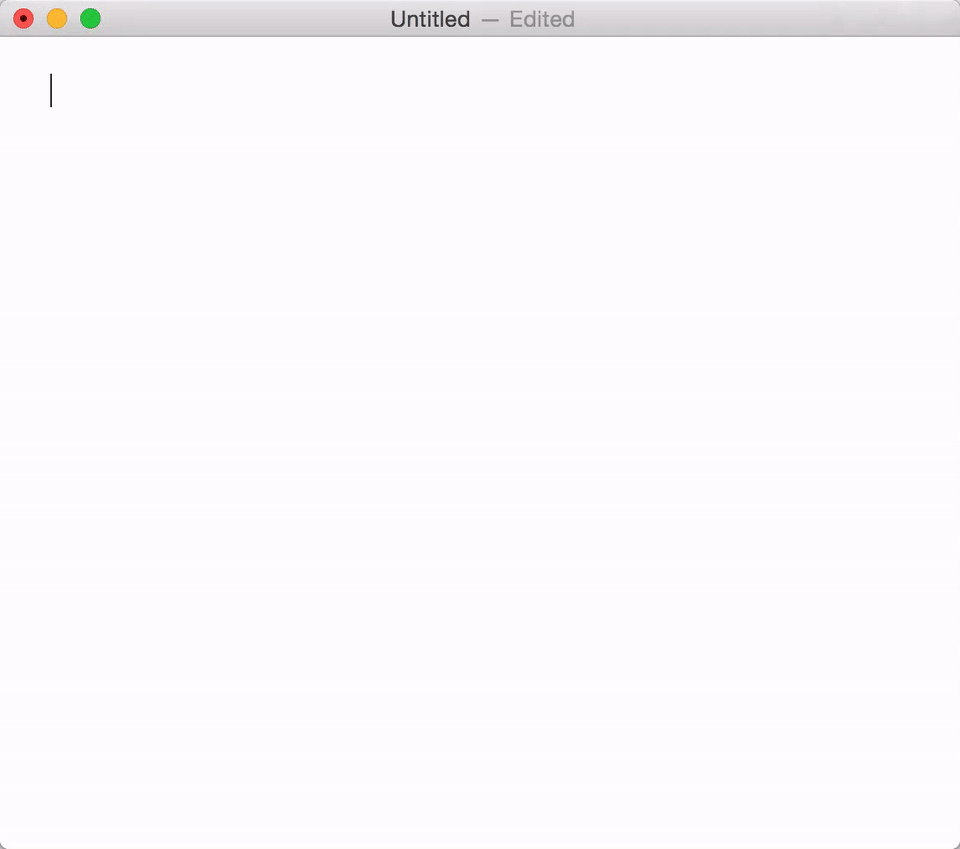

Markdown常用编写工具
用 Markdown 写作并没有什么讲究，就像程序员可以直接在记事本上写代码一样，我们也完全可以在记事本上用 Markdown 码字，最后再用支持 Markdown 的编辑器转换即可。
当然，大多数情况下我们还是使用 Markdown 编辑器，这些软件往往支持语法检测，也可以预览排版效果，提供更好的写作体验。
市面上的 Markdown 编辑器实在太多了，我们筛选出部分口碑较好的产品。
Dilinger
dillinger是一个在线下的markdown编辑工具，漂亮强大，支持md, html, pdf 文件导出，不过dilinger在国外，找开速度很慢。
Typora
支持平台：MacOS， Windows、Linux
提到 Markdown 写作器，一定绕不开 Typora 的名字。Typora 完全免费，软件界面简洁到就像 Mac 自带的文本编辑器，它并不像主流的 Markdown 编辑器一样采用双栏布局，而是将写作与预览窗口合为一体，输入标记后即可实时输出效果，实现「所见即所得」。
Typora看到的不是markdown的源码，看到的是最终的显示效果，对于程序员来说不一定那么习惯。

MarkdownPad
支持平台：Windows
款全功能的编辑器，被很多人称赞为windows 平台最好用的markdown编辑器。

Cmd Markdown
支持平台：Windows、Linux、Mac、在线
CmdMarkdown作业部落出品，全平台并支持Web端，它是国内的应用，Web版打开速度比Dilinger快很多。CmdMarkdown是作业部落的客户端，可以直接云存储你的markdown文档，如果你的目的是在线写一些笔记，它是你的首选；
Mou
支持平台：Mac
简洁优雅，免费又好用，中文兼容性好。

MacDown
支持平台：Mac
简洁优雅，开源免费，开源爱好者的首选，在Mac的App Store里直接搜索就可以安装；
其它
下面的这些都是支持云存储功能的收费软件，除在PC上使用外，也提供了对应的手机版应用，会费的，功能也自然更加强大，有财力的可以选择它们。
Ulysses- 支持Mac、Iphone、Ipad
iA Writer - 支持 Mac、IOS、Windows、Android
Bear - 支持平台：MacOS、iOS